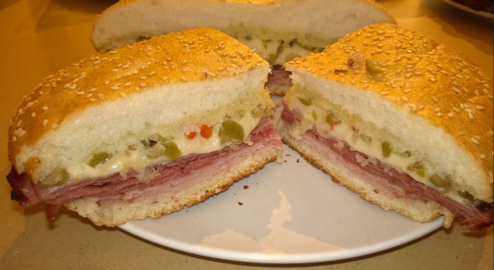

Muffuletta

Ingredients (Proportions for 4 sandwiches)
- 60 g Soppressata (2 oz)
- 60 g Mortadella
- 120 g Capicola or ham (8 oz)
- 120 g Genoa Salami
- 120 g Prosciutto di Parma
- 120 g Provolone
- 120 g Mozzarella
- Olive salad (lots)
Directions
- Prep Bread: Split the loaf and brush both cut sides with olive oil.
- Layer Filling: Spread olive salad on the bottom half. Layer meats as directed, adding Provolone between layers.
- Assemble: Top with remaining olive salad and replace the loaf top.
- Bake: Wrap in sprayed foil and bake at 400°F for about 45 minutes, until the internal temperature reaches 145-150°F.
Chef's Notes
- Laissez les bons temps rouler